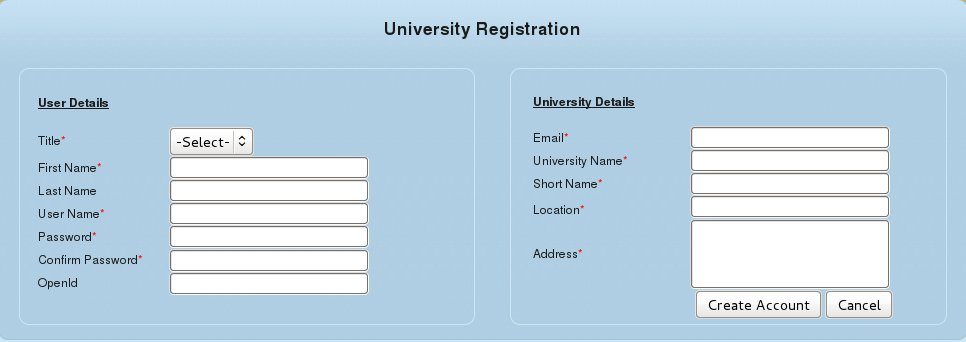
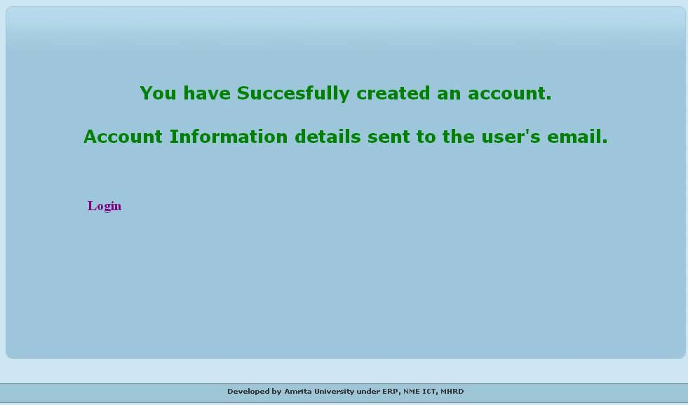

National Faculty Expertise System
University Administor
Overview
The university administrator manages the NFES activities at the University level right from registering own university in the NFES system to maintaining day-to-day updates in the faculty profiles.
University administrator has the same powers as the super admin but only within own university. There will be no access to the details of other universities which are registered in the same NFES host network.
University Admin Registration
The main Log-in page of NFES is as shown below.
At this link, click Register
The User Registration page opens up as shown below:

Enter the mandatory details including the desired administrator user details as well as the University's details.
Click Create Account.
A message appears confirming successful creation of the university and registration of its administrator. The access details are sent to the e-mail id saved in the Administrator details.
Access your mail account to retrieve the password details.
Click on the activation link provided in the mail. In a new wnidow, message will be displayed confirming that the user account has been activated.
On this page, click Login
The NFES log-in page will be opened.

Now login to the NFES application using the provided username and password.
The Administrator Home page is opened.
The menu list on the left (in the screenshot above) indicates the activities flow which the University Administrator has privilege.
The Faculty List menu is enabled by default and the page is shown above. Note that the University field displays your University name (saved during registration) permanently in all relevant pages for your (administrator) login.
For details on the activities and tasks of the Administrator, please refer to the guide for the System Administrator.